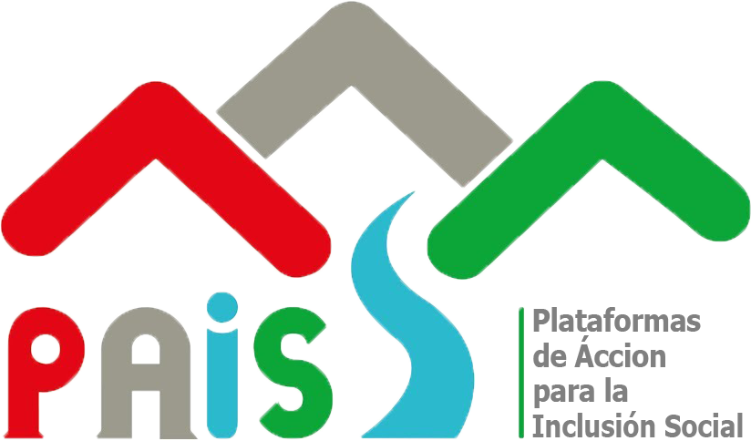

<mat-sidenav-container class="sidenav-container">
  <mat-sidenav #drawer class="sidenav" fixedInViewport="true"
    [attr.role]="(isHandset$ | async) ? 'dialog' : 'navigation'" [mode]="(isHandset$ | async) ? 'over' : 'side'"
    [opened]="!(isHandset$ | async)">
    <mat-toolbar>
      
    </mat-toolbar>
    <div class="span-usuario">
      <span>
        {{user.perfil.nombre}}
        <br>
        (U.T. AYACUCHO NORTE)
      </span>
    </div>
    <mat-nav-list>
      <a mat-list-item [routerLink]="['/intranet/home']" routerLinkActive="active-list-item"><mat-icon>directions_car</mat-icon>  Vehiculos</a>
      <a mat-list-item routerLinkActive="active-list-item"><mat-icon>ev_station</mat-icon>  Generadores electricos</a>
      <a mat-list-item [routerLink]="['/intranet/kilometraje']" routerLinkActive="active-list-item"><mat-icon>score</mat-icon>  Control kilometraje</a>
      <a mat-list-item [routerLink]="['/intranet/generador-electrico']" routerLinkActive="active-list-item"><mat-icon>assignment</mat-icon>  Control consumo generador</a>
    </mat-nav-list>
  </mat-sidenav>
  <mat-sidenav-content>
    <mat-toolbar>
      <button type="button" aria-label="Toggle sidenav" mat-icon-button (click)="drawer.toggle()"
        *ngIf="isHandset$ | async">
        <mat-icon aria-label="Side nav toggle icon">menu</mat-icon>
      </button>
      <span>Control de combustible</span>
      <span class="spacer"></span>
      <button mat-button [matMenuTriggerFor]="usuario">
        {{user.usuario}}
        <!-- <span>(Jefe Unidad Territorial)</span> -->
        <mat-icon>expand_more</mat-icon>
      </button>
      <mat-menu #usuario="matMenu" xPosition="after" [overlapTrigger]="false">
        <button mat-menu-item (click)="salir()">Salir</button>
      </mat-menu>
    </mat-toolbar>
    <!-- Add Content Here -->
    <ng-content></ng-content>
  </mat-sidenav-content>
</mat-sidenav-container>